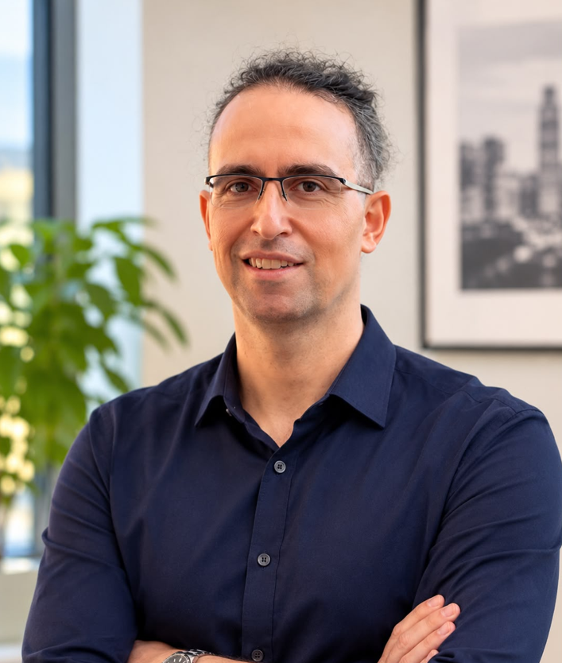

Siavash Panahandeh
Frontend Developer · Angular & TypeScript Specialist · AI Integration Explorer

Siavash has over 16 years of experience building production web applications, primarily specializing in frontend development with Angular and TypeScript. He's also worked with React and recently developed REST APIs using Python and FastAPI to support React applications.
In his personal projects, he's been exploring AI integration and building AI-enabled applications, with a particular interest in AI-assisted software development, software quality, automated testing, and how AI is changing established engineering practices.
He enjoys investigating problems, learning new technologies, and collaborating with others to find practical solutions.